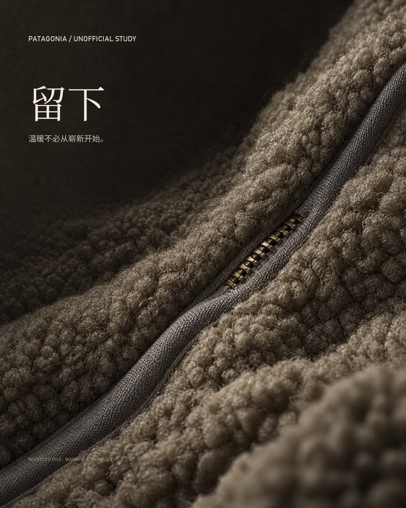
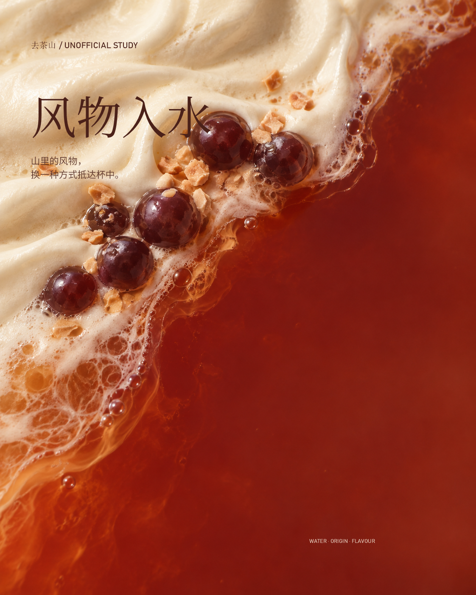
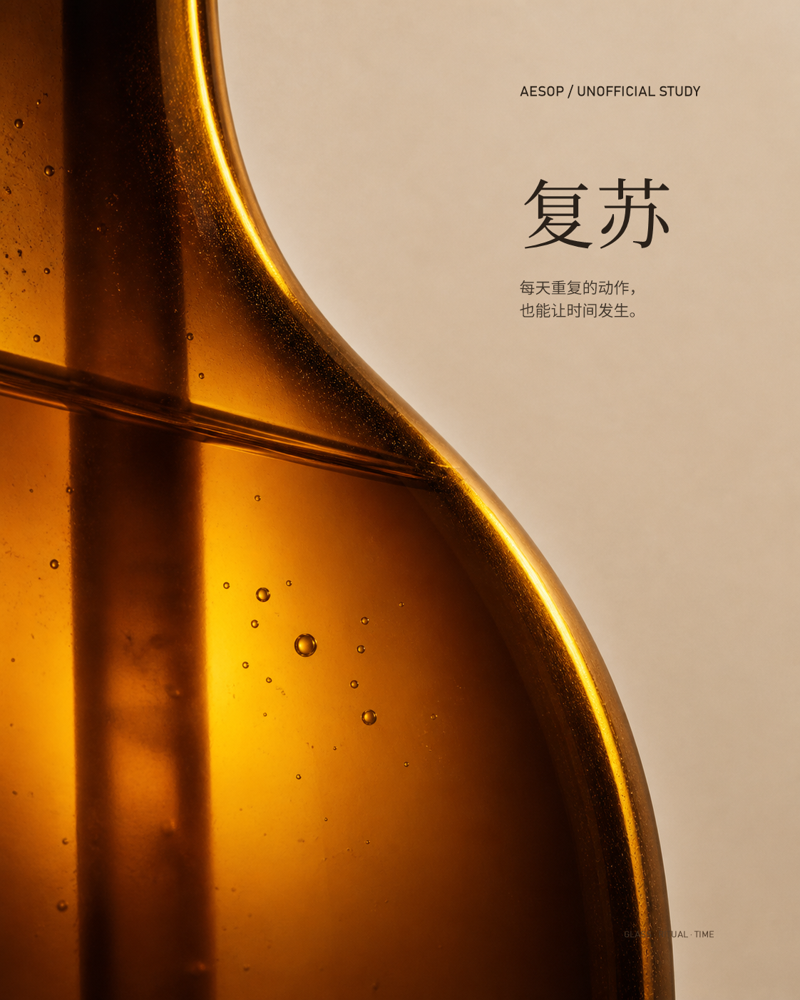
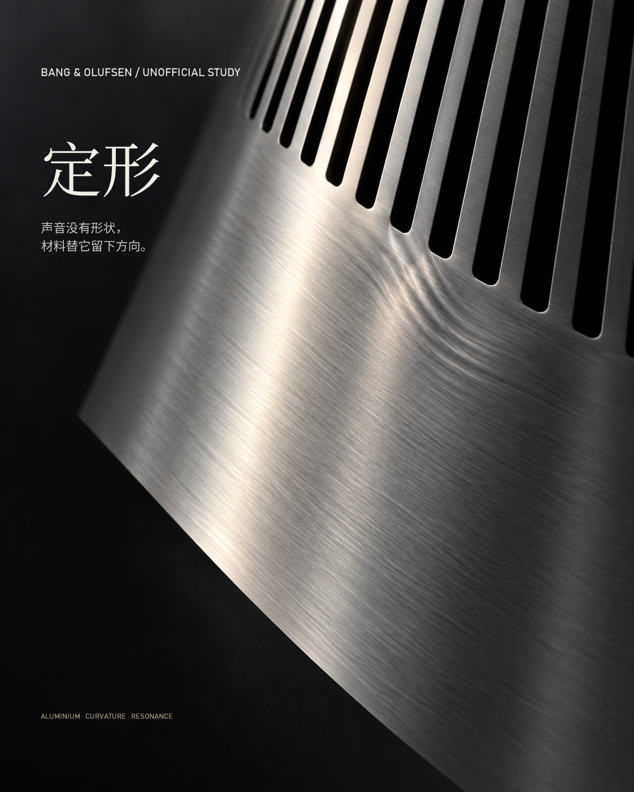
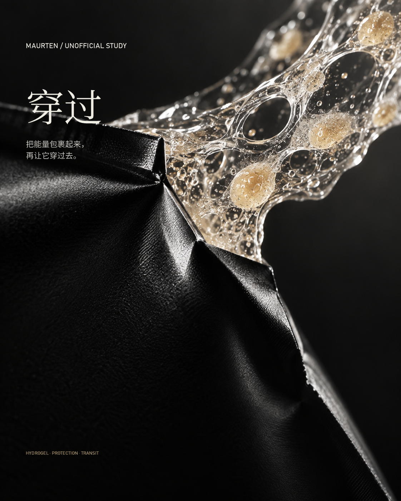
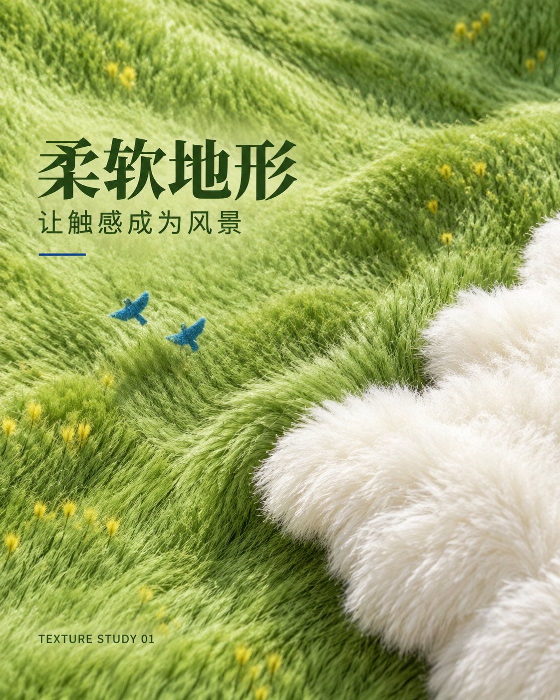

SELECTED EXPERIMENTS · 01—06
六次从商品与品牌图像出发的材质转译。这里只看完成海报，不展示原图。

01 · OUTDOOR APPAREL
羊羔绒成为被使用、被保留的时间地貌。

02 · TEA BEVERAGE
山地风物不被描绘，而是在液体边界中抵达。

03 · BODY CARE
玻璃厚度、折射与气泡让日常动作积累成时间。

04 · CONSUMER AUDIO
拉丝铝的方向与曲率，为不可见的声音留下形状。

05 · SPORTS NUTRITION
包裹与释放被压缩成一条经过身体的能量路径。

06 · TEXTURE STUDY
纤维的方向、压痕和接触边界，把触感变成风景。